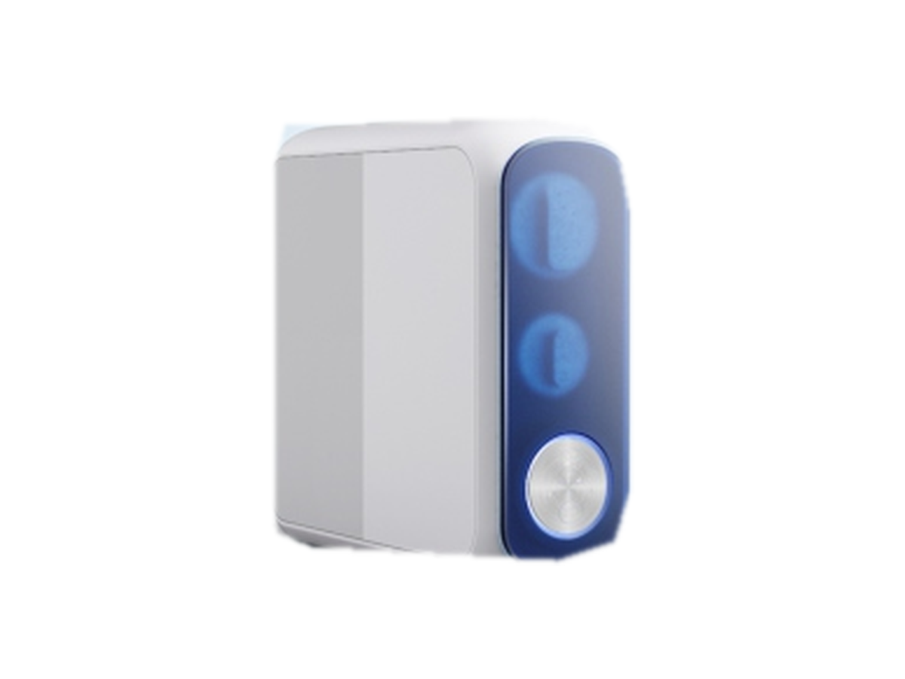

Sous-évier
Sous-évierRP-U07
Purificateur RO sous-évier 400–600 GPD
SKU: RP-U07
MOQ : à confirmer lors de la demande
Accueil/Produits/Systèmes RO sous-évier/ RP-U11

Systèmes RO sous-évier
Purificateur RO à trois cartouches (AM606R)
RP-U11 est une famille RO sous-évier à trois cartouches menée par le RP-U11-1 (AM606R, 600/800/1000G, 427 mm de haut, volume nominal de 6000 L), aux côtés du RP-U11-2 (M906R, 1000G fixe, 400 mm de haut) — plus deux variantes de plus grande capacité, RP-U11-3 (AM901R) et RP-U11-4 (AM902R). Les spécifications sont confirmées par modèle et par commande.
La tension / fréquence est configurable selon le pays de destination. Les autres configurations sont confirmées par commande.
RP-U11 est une famille RO sous-évier à trois cartouches menée par l’option principale RP-U11-1 (AM606R, 600 / 800 / 1000 GPD, 315 × 203 × 427 mm, volume nominal d’eau purifiée de 6000 L). La famille comprend aussi une option fixe RP-U11-2 (M906R) de 1000 GPD (315 × 203 × 400 mm, 2,6 L/min, 4500 L) et deux options de plus grande capacité, RP-U11-3 (AM901R) à 1000 / 1200 GPD et RP-U11-4 (AM902R) à 800 / 1000 GPD. L’option principale fonctionne à ≤53 dB(A) avec un ratio eau pure/évacuation de 2:1 et une puissance nominale de 65 / 95 / 130 W. Elle est conçue pour les propriétaires de marque qui veulent une famille RO sous-évier silencieuse avec un choix de capacité.
Quelle est la quantité minimale de commande ?
La première commande est de 200 unités par modèle, et les réassorts sont de 500 unités.
Puis-je commander un échantillon avant une commande en volume ?
Oui. Les échantillons sont prêts en 15 jours, et les frais d'échantillon sont remboursés sur votre première commande en gros. Les commandes en gros prennent 40 jours après approbation de l'échantillon et sont expédiées FOB Shenzhen.
Quelle option dois-je choisir ?
Coter comme RP-U11 et préciser l’option : RP-U11-2 1000G, RP-U11-1 600/800/1000G, RP-U11-3 1000/1200G ou RP-U11-4 800/1000G. L’option principale est le RP-U11-1 600/800/1000G.
Quatre options — coter comme RP-U11 et préciser l’option (RP-U11-2 1000G, RP-U11-1 600/800/1000G, RP-U11-3 1000/1200G ou RP-U11-4 800/1000G).
Survolez l'image d'une variante pour voir ses spécifications. Sur écran tactile, touchez une image.



Spécifications complètes de chaque variante, côte à côte. Le tableau de spécifications ci-dessous montre les valeurs de l’option principale.
| Spécification | RP-U11-1 — 600/800/1000G (AM606R) | RP-U11-2 — variante 1000G (M906R) | RP-U11-3 — variante 1000/1200G (AM901R) | RP-U11-4 — variante 800/1000G (AM902R) |
|---|---|---|---|---|
| Capacité RO | 600 / 800 / 1000 GPD | 1000 GPD | 1000 / 1200 GPD | 800 / 1000 GPD |
| Débit nominal | Confirmé par commande | 2.6 L/min | ≥2.62 L/min | ≥2.1 / 2.62 L/min |
| Filtration | PP+C + RO + post-carbone | PPC + RO + C | PPC + RO + post-carbone | PP et fibre de carbone + RO + post-carbone |
| Pure : évacuation | 2:1 | Confirmé par commande | Zéro eaux usées | 2:1 |
| Bruit | ≤53 dB(A) | Confirmé par commande | ≤53 dB(A) | ≤53 dB(A) |
| Puissance nominale | 65 / 95 / 130 W | Confirmé par commande | 120 W | 90 W |
| Dimensions (W×D×H) | 315 × 203 × 427 mm | 315 × 203 × 400 mm | 440 × 158 × 430 mm | 440 × 135 × 400 mm |
| Entrée | 0.1–0.4 MPa; 5–38°C | 0.1–0.4 MPa / 0.4–0.8 MPa | 0.1–0.4 MPa; 5–38°C | 0.1–0.4 MPa; 5–38°C |
| Volume nominal d'eau purifiée | 6000 L | 4500 L | Confirmé par commande | Confirmé par commande |
| Tension / fréquence | Configurable selon le pays de destination | Configurable selon le pays de destination | Configurable selon le pays de destination | Configurable selon le pays de destination |
11 lignes de spécifications du catalogue ROPureOEM.
| Capacité RO | 600 / 800 / 1000 GPD |
|---|---|
| Débit nominal | Confirmé par commande |
| Volume nominal d'eau purifiée | 6000 L |
| Filtration | PP+C + RO + post-carbone |
| Dimensions | 315 × 203 × 427 mm |
| Pure : évacuation | 2:1 |
| Bruit | ≤53 dB(A) |
| Puissance nominale | 65 / 95 / 130 W |
| Entrée | 0.1–0.4 MPa; 5–38°C |
| Tension / fréquence | Configurable selon le pays de destination |
| Autres configurations | Confirmé par commande |
Les spécifications sont tirées du catalogue ROPureOEM. Lorsqu'une valeur n'est pas encore confirmée, elle est indiquée comme « Confirmé par commande » — nous ne publions pas de chiffres non confirmés.
Sous-évierPurificateur RO sous-évier 400–600 GPD
SKU: RP-U07
MOQ : à confirmer lors de la demande
 Sous-évier
Sous-évierRO sous-évier à chauffage par accumulation
SKU: RP-U08
MOQ : à confirmer lors de la demande
 Sous-évier
Sous-évierPurificateur RO haute capacité à accès frontal
SKU: RP-U09
MOQ : à confirmer lors de la demande
 Sous-évier
Sous-évierPurificateur RO compact à deux cartouches
SKU: RP-U12
MOQ : à confirmer lors de la demande